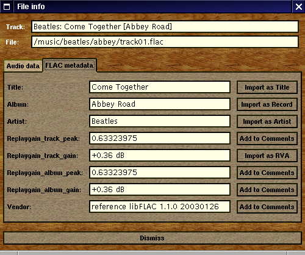
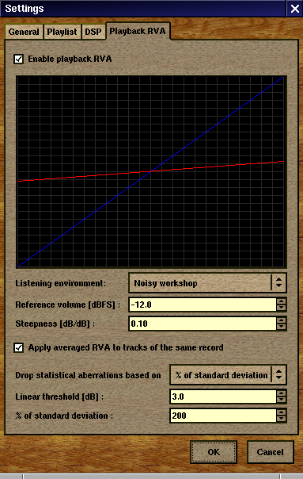

[ Home ] [ Screenshots ] [ Download ] [ Compiling ] [ Usage Tips ] [ Q & A ] [ Misc ]
[ SF Project page ] [ CVS Viewer ] [ Mailing list ] [ Bugtracker ]
On this page we attempt to uncover most features of the program, of which there are a few not-so-obvious to find things, as well as keyboard shortcuts that will make your life much easier. So read on.
We are planning to convert this page into a complete reference manual written in LyX that could be rendered in HTML and PDF formats.
You will need to know about command line options before anything else. If you start Aqualung without command line parameters the first time, it will print a help message with valid parameters and example invocations. As a minimum, you will have to specify which output device (OSS, ALSA or JACK) do you want to use. It is possible to not specify this all the time, see the later section about configuration options. A listing of the command line options follows here.
aqualung --output (oss|alsa|jack) [options] [file1 [file2 ...]]
aqualung --help
aqualung --version
-d, --device <name>: Set the output device (defaults to plughw:0,0).
-p, --period <int>: Set ALSA period size (defaults to 8192).
-n, --nperiods <int>: Specify the number of periods in hardware buffer
(defaults to 2).
-r, --rate <int>: Set the output sample rate.
-R, --realtime: Try to use realtime (SCHED_FIFO) scheduling for ALSA
output thread.
-P, --priority <int>: When running --realtime, set scheduler priority
to <int> (defaults to 1).
-d, --device <name>: Set the output device (defaults to /dev/dsp).
-r, --rate <int>: Set the output sample rate.
-a, --auto: Auto-connect output ports to first two hardware playback
ports.
-c, --client <name>: Set client name (needed if you want to run
multiple instances of the program).
-s[<int>], --srctype[=<int>]: Choose the SRC type, or print the list
of available types if no number given. The default is SRC type 4 (Linear
Interpolator).
Note that remote controlling of instances is only possible if the instance you want to send a command to is running as the same user as you are when you issue the remote command.
-N, --session <int>: Specify the instance number to send the
remote command to. Instances
are numbered on a per user basis, starting with 0. Except for the
zero-th instance (started first), the instance number is displayed in
the title bar of the main window (e.g.: Aqualung.3). If you don't use
this option, the following options will control the zero-th instance
by default, except for -L which defaults to the present instance (so
as to be able to start playback immediately from the command line).
-B, --back: Jump to previous track.
-F, --fwd: Jump to next track.
-L, --play: Start playing.
-U, --pause: Pause playback, or resume if already paused.
-T, --stop: Stop playback.
-V, --volume [m|M]|[=]<val> :
Adjust the volume. m/M means mute; if = is present, the remote instance's
volume control will be set to the value specified, otherwise, the volume
will be adjusted by the supplied (signed) value. The values are in dB units.
-Q, --quit: Terminate remote instance.
-E, --enqueue: Don't clear the contents of the playlist when adding
new items.
$ aqualung -s3 -o alsa -R -r 48000 -d hw:0,0 -p 2048 -n 2
$ aqualung --srctype=1 --output oss --rate 96000
$ aqualung -o jack -a -E `find ./ledzeppelin/ -name "*.flac"`
Depending on the compile-time options, not all file formats and output
drivers may be usable. Type aqualung -v to get a list of
all the compiled-in features.
Aqualung obeys two environment variables concerning LADSPA plugins. LADSPA_PATH should contain a colon-separated list of paths to search for LADSPA plugin .so files. LADSPA_RDF_PATH should contain a colon-separated list of paths to RDF metadata files about these plugins. When any of these is not specified, the program will use sensible defaults and look in the obvious places.
Here is a list of files that Aqualung creates, reads and relies on.
The ~/.aqualung directory contains the music store and other user settings.
~/.aqualung/music_store.xml: Music database, stores various metadata about music on your computer
~/.aqualung/config.xml: GUI (skin, window size/position, etc.) and other settings
~/.aqualung/plugin.xml: List of running plugins and all their settings
~/.aqualung/playlist.xml: Automatically saved and restored playlist (if you enable this feature)
~/.aqualung/<skin-name>: Locally available skin <skin-name>
System-wide skin directory is ${prefix}/share/aqualung/skin.
The rest of this page assumes you managed to compile, install and start the program successfully.
You can control most of the program from this window. The cue controls in the down-left corner are fairly obvious. You can drag the large slider in the middle for seeking. There are two smaller sliders above that, the left one is for adjusting the volume and the right one for adjusting the balance. Above these, there are two horizontal text areas showing information about the currently playing track, and input/output parameters such as sample rate, mono/stereo, bitrate, output driver (eg. OSS, ALSA, JACK) etc. The first trick to learn is that these lines are horizontally draggable with the mouse if the text does not fit in the available visible space. However, they don't scroll automatically (as in XMMS), and for a very good reason.
In the upper left corner, you find one bigger and two smaller displays that show track times: elapsed time and remaining time and total track time. The big display also shows the current volume and balance setting when appropriate, too. By clicking in these displays with the left or right mouse button, you can rearrange the displays as you want them. The following table may seem a bit confusing at first, but once you realize the point, it becomes blindingly obvious.
| mouse button | clicked into | ||
|---|---|---|---|
| A | B | C | |
| left | A <--> B | B <--> A | C <--> B |
| right | A <--> C | B <--> C | C <--> A |
In the right down corner there are additional buttons. The buttons with the letters display or hide additional windows of the program:
| FX | LADSPA patch builder |
| MS | Music Store |
| PL | Playlist |
The remaining three buttons are to select the playback mode. When none of these buttons is depressed, playback goes the normal way. The buttons are mutually exclusive, and select track repeat, list repeat or shuffle mode. I'm sure you can figure out which is which. ;-)
Volume and balance slider tricks:
An additional thing to know about the volume control is that it ranges up to +6 dB. This means you can send a bigger signal to the audio device than in the original file. With 0 dB corresponding to 100% signal level, +6 dB is almost exactly 200% signal level (and 4 times signal power as well). This means you can overdrive your output device, and since clipping will occur at 100% anyway, it will cause nasty digital distortion much worse than simple analog overdrive. If you have a track with a reasonably low level, you can go above 0 dB with the volume control. But today most CD's are mastered to keep the average volume level very close to the 0 dB (or 100%) top, and so they will likely distort with as little as +1 dB additional gain. The moral is: if you want it loud, turn up your external amp.
On a related note, another thing to watch out for is LADSPA plugins (in case you use them). It is very common that the signal level leaving a plugin is greater than the signal level the plugin gets on its input. So it is best to leave a few dB's of headroom if you do that. A very typical case is boosting some frequency bands a few dB's with an EQ plugin. You should decrease the overall volume level with as much dB's as the largest boost (or even more), or you are risking that the signal will get chopped causing bad distortion. Alternatively, apply this limiter plugin as the last one in the processing chain, but only if you know what you are doing.
Right-clicking almost anywhere in the window will bring up a menu that allows access to the Settings dialog, the skin chooser, the JACK port setup dialog (enabled only when running the program with JACK output), and the About box. The latter may be useful to see which features have been compiled into the program. (If you haven't read the page about compiling yet: the configuration of the program can be adapted so as not to require certain libraries when compiling, and not provide certain features accordingly.)
| up arrow | jump to previous track |
|---|---|
| down arrow | jump to next track |
| left arrow | jump (seek) backwards in current track |
| right arrow | jump (seek) forward in current track |
| p or P | play |
| s or S | stop |
| space | pause |
| / | volume down |
| * | volume up |
| Alt+/ | balance towards left |
| Alt+* | balance towards right |
| Alt+s | show/hide Music Store |
| Alt+l | show/hide Playlist |
| Alt+x | show/hide LADSPA patch builder |
This window has relatively few surprising features. It normally receives its contents from the Music Store (see below). However, you can put any file in the playlist regardless of the contents of your Music Store, using the Direct add button at the bottom of the window.
The other two buttons (Select all, Remove selected) function as you would expect them when clicked with the left mouse button. However, clicking with the right mouse button brings up small menus that contain further options such as Invert selection.
The contents of the playlist can be saved and restored automatically when the program exits and starts up. (Whether this should be done is a configuration option, covered later.) In addition to this, you can save the playlist manually at any time, or load a previously saved playlist file. To do this, right click in the playlist area, which will bring up a popup menu with these features. The playlist is saved as an XML file, so you should normally end your filename with .xml -- however, this is only good practice and not necessary. Note that the playlist file format is not compatible with Winamp/XMMS .m3u files. However, Aqualung will open playlists in .m3u and .pls format whenever possible.
You can rearrange the list at any time by dragging and dropping items with the mouse.
| up/down arrow | navigation in the list |
|---|---|
| delete | remove selected track(s) |
| enter, double click | start playback of the selected or double-clicked track, or jump to it if already playing |
| i or I | bring up the File info dialog (also accessible from the right-click popup menu) |
| q or Q | hide window (same as Alt+l or Alt+L in main window) |
The Music Store is a simple database of all your music. The central
philosophy of this program is that you have a large storage (ideally
an entire hard drive or a separate partition) to store all your music
files. This is not necessary for the program to work. The audio files
can be scattered around your system as long as you have read
permissions to them. However, it is strongly recommended that you
devote a separate directory for all the music (for example,
/music would be a convenient place to store files that
are owned by root, but readable by all users).
In this central directory, create subdirectories for each artist you
have records from. The directory names do not have to contain the
exact names, you can for example create /music/ledzep for
Led Zeppelin, /music/crimson for King Crimson,
/music/hendrix for Jimi Hendrix and so on. In these
directories, create subdirectories for each record you have. Once
again, the directory names for the records do not need to fully
contain the record titles; they can be short and without spaces and
special characters.
In the directories of records, you should cdparanoia the
records, and have the resulting file names intact. Yes, you don't need
to rename track01.cdda.wav to 01_Lark's Tongues In
Aspic, Part One.wav -- this would be very unhealthy to do
anyway.
So you have a bunch of directories containing lots of tracks. Now you can add all this to the Music Store, additionally specifying metadata about Artists, Records and Tracks. One such metadata is the actual name of these items instead of the directory and file names you have on your filesystem.
To do so, you will utilize the popup menus in the Music Store window. When you have nothing initially, all that pops up is an option to add a new artist. When you have at least one artist, clicking on them with the right mouse button will let you add a record to them. When you have a record, the popup menu for it will have the option to add tracks to the record.
Now you may think: what a tremendously hard work it will be to add all
the tracks to all records, one by one. True, so the program has
something slightly better to offer. When you are adding a record to an
artist, the dialog that comes up has an option that says 'Auto-create
tracks from these files', where you can select a bunch of
files. Ideally, when you have the tracks of a record in one directory
as described above, this will be quite easy. And if you didn't mess
with the cdparanoia-given names trackXX.*, the tracks
will be in the right order without further attention.
Now all you have to do is set the correct names of the tracks, which is a bit of work, but should be doable fairly quickly due to keyboard shortcuts.
NOTE: We are seeking ways to make building that music database in the first place a much easier task. Future versions will support recursive searching of your HD for playable files, and adding them automatically. Freedb support is also likely to appear someday.
Every Artist, Record and Track has fields you can fill in via bringing up the Edit dialog for that item. The 'Visible name' is obviously the string that will appear in the Music Store tree, and in the Playlist. The 'Name to sort by' is a string used to sort items on the same level of hierarchy (all artists, records of a given artist, and tracks of a given record).
For artists, you should enter the same here as the 'Visible name' for ordinary band names (you can use copy&paste to do that). However, for some artists you will enter a slightly modified string: "Mayall, John" or just "Mayall" for "John Mayall", for example. This is to ensure that "John Mayall" (which is the visible name) appears between Mahavishnu and Morphine, and not somewhere near Jethro Tull.
For records and tracks, the 'Name to sort by' should be a decimal numbering of the items. If you added tracks to the records using the aforementioned 'Auto-create tracks from these files' feature of the Record add dialog, the tracks will be automatically numbered for you this way.
Last but not least, every item has a 'Comment' field that may contain multiple lines of text, and is perfectly optional to use for any artist, record or track. When you have entered something in this field, it will be displayed in the lower area of the Music Store window when the corresponding item is selected in the tree. Use this to store miscellaneous data, such as birth dates of artists, release dates or comments like "Recorded live at Royal Albert Hall, ..." or "Digitized from original LP" for records, and movement subtitles for tracks that have them (see the above screenshot for this latter case).
The program can read and display FLAC stream metadata, Ogg Vorbis
comments and ID3v2 tags present in the files themselves. To see such
metadata for a particular track, you will utilize the 'File info'
dialog accessible from the Music Store (right-click popup menus for
Tracks, or press [i]) and the Playlist (right-click popup
menu for playlist entries, or press [i]).
When you open the 'File info' dialog from the Music Store, you will find buttons to the right of every metadata field that was read from the file. By pressing these buttons, the associated data will be imported into the corresponding field of the relevant Track.
For metadata fields that don't have a corresponding field in the Music Store, you can append their contents to the 'Comment' field as a catch-all solution.
RVA stands for Relative Volume Adjustment, and refers to a system that is supposed to compensate for the fact that the perceived volume levels of tracks from different records are sometimes quite different. With usual players, you are left with the possibility to adjust the volume manually, when necessary; but not with Aqualung.
You have to do two things prior to using RVA in Aqualung. First, you have to calculate the volume of the tracks you want affected by the RVA system. To do this, use the 'Calculate volume' option found in the right-click popup menus of Artists, Records and Tracks. When you activate this option, a small window will pop up with a progress bar. You can move this window out of your way, and proceed with using Aqualung. Processing will be carried out in the background, and should not affect your ability to play music at all. Calculated volume levels will be saved and restored with the rest of the Music Store. The values are shown in the 'Edit track' dialog.
When you are done with this, open the 'Settings' dialog (right-click almost anywhere in the main window), and select the 'Playback RVA' notebook page. You will see something like this:
If 'Enable playback RVA' is unchecked, the whole RVA system is turned off. No tracks receive adjustment. If playback RVA is enabled, you can select a listening environment that matches your setup. The idea is that the better your environment, the smaller adjustment you need to enjoy the music. If you work in a noisy workshop (and listen to Aqualung-played music) then it is best to minimize the volume differences between tracks so all tracks will be uniformy audible at a particular volume setting. If you can afford to listen to music in a silent room with high quality headphones or good near-field monitors, you should choose 'Audiophile' which will yield no change to volumes.
The diagram shows the input/output transfer function applied to the previously measured track loudness to obtain the needed adjustment needed for a particular track. The diagram is 24 dB large in both directions, with the (0, 0) point being in the upper right corner. The blue line shows the identity function (no change), while the red line shows the output volume (the actual transfer function). The adjustment applied at a particular track volume is the vertical distance between the two lines at that position. The transfer function is linear. You can use the 'Reference volume' and 'Steepness' controls to change its position.
In most cases, it is desirable that tracks of the same record receive the same adjustment, so as to preserve the volume differences internal to the record. This can be enabled by checking 'Apply averaged RVA to tracks of the same record'. When enabled, volume levels of the same record will be averaged and all tracks will be adjusted by an average value. Please note that measured volume levels are converted to RVA values when you add something from the Music Store to the Playlist. Therefore, this feature works only when you add an Artist or a Record. If you add a record by adding all the Tracks manually one after another, they will all receive independent RVA values. Also, changing RVA settings will not affect entries already in the Playlist.
There are many records having one or two tracks that really stand out of the average volume level. (For example, there is one very silent track on an otherwise loud record.) In this case, these tracks would 'pull down' the average volume. To get around this, you can adjust a threshold that will be used to sort out tracks that stand out too much and will be disregarded when computing the average volume.
You can select whether you want to specify a threshold in linear volume units [dBFS] or you want to specify a percentage of the standard deviation of the set of individual track volumes to use as a threshold. The default values should work well for the vast majority of records. If you always want every track's volume to count in the average adjustment of the record, choose the linear threshold and set it to a really big value (say, 30 dB) so all tracks will be within this range.
You also have the possibility to always use a manually specified, fixed value as RVA for a particular track. In the 'Edit track' dialog for that track, check the 'Use manual RVA value' checkbox and set the value with the spinbutton on its right. If you import an ID3v2.4 RVA tag from an MP3 file, it will also set this field thereby circumventing Aqualung's own RVA calculation.
| double click, a or A | add artist/record/track to playlist |
|---|---|
| n or N | new artist/record/track |
| e or E | edit artist/record/track |
| i or I | bring up the File info dialog (for Tracks only) |
| v or V | start volume calculation for the selected item (recursive for Artists and Records) |
| delete | remove artist/record/track |
| + | add new record/track to this artist/record |
| shift + right arrow | expand current row recursively |
| shift + left arrow | collapse current row recursively |
| enter | expand/collapse current row non-recursively |
| up/down arrow | navigation in the tree |
| q or Q | hide window (same as Alt+s or Alt+S in main window) |
In addition to the popup menu items and keyboard shortcuts, you can also add an item to the playlist by dragging and dropping from the Music Store window into the Playlist. This method has a further advantage: you can place the newly added items in any position, not just append to the end of the list.
This dialog lets you set some options that affect the behavior of the program. It is split into multiple notebook pages to make arranging and accessing all the options easier.
On the 'General' tab, the 'Title format' can be set to fit your personal taste. Such strings may be "%a: %t [%r]", "%a / %r / %t", "%a :: %r :: %t", or just about anything else you can think of. Note that once you add something from the Music Store to the playlist, the strings in the Playlist window will not update if you change this setting afterwards. This is because creating the one-line title string from the artist, record and track titles is a one-way operation, and though one could think of workarounds, they are just not elegant and practically needed. (We might change this in the future, so if this is a problem for you, contact us.)
The so-called 'implicit command line' is something you should pay attention to. It exists mainly for those who have a stable sound setup and always use the program with the same output device, eg. they have only OSS and don't plan to upgrade. For such users it may be cumbersome to always specify the desired output device on the command line, along with its optional parameters if needed. So here you may enter something that you would otherwise enter on the command line every time.
But beware: you cannot override or turn off every option, so for
example if you enter "--help" here, the program will always display
the standard message and exit immediately; and there is no way to
override that from the command line. Now you won't do that, since you
are a smart user, aren't you? But if your sister does, all you have to
(or can) do is grab a text editor and hack it out of
~/.aqualung/config.xml where it is stored. You will find
it between <default_param> and </default_param>.
Now on to the 'Playlist' notebook page. The option to save/restore the playlist when exiting ard starting the program is turned on by default. If you prefer starting with an empty playlist every time, turn it off.
Here you can also set the visibility of track lengths and RVA values in the playlist. By dragging and dropping entries in the list, you can rearrange the columns. The position of those that are not shown is of course irrelevant.
Changing the two options on the 'DSP' page takes effect immediately, and stays that way regardless of whether you leave the dialog with the OK or Cancel button.
The sample rate converter type should be chosen to fit the resources
of your computer, and provide the best affordable quality at the same
time. So fire up top or something similar on a spare
terminal, and start with the best converter. If your machine is not
very new, this will consume huge amounts of CPU, and the playback will
very likely be choppy. If this is the case, you will have to pick
another converter. 'Fastest Sinc Interpolator' is usable on today's
most machines. If not, use 'Linear Interpolator' instead of 'ZOH'
since both are blindingly fast, but linear is naturally much better
than zero-order (constant hold). It should also be noted that the CPU
usage of sample rate conversion is greatly affected by the difference
between the two sample rates: upsampling 32k to 96k will be much more
expensive than, say, upsampling from 44.1k to 48k.
Of course, sample rate conversion springs into action only when the output sample rate (the sample rate you specified in case of OSS or ALSA, or the sample rate the JACK server specified in case of JACK) does not match the sample rate of the track you are playing. A typical situation is when you have 44.1k files grabbed from CD and play back at 48k.
The last notebook page is 'Playback RVA', which we have already described.
One great feature of the program is that you can apply LADSPA plugins to the music. You can use the equalizer of your choice instead of a built-in one, along with other plugins. You can process your sound with Aqualung in ways that the author of this program never thought of.
Of course, faithful reproduction of music does not require or permit pervasive signal processing, since that is not the purpose of such activity. However, the technology is at your disposal and it's up to you to use or misuse it. It may be necessary to adapt your listening gear to the acoustic environment, using small amounts of equalization preferably in a subtractive manner. In addition to this, I also like to spice my tracks with a small amount of tubewarmth to feel that warm tube sound even with my transistor amplifiers, and to bring out even the finest details of the music.
The plugin chain you build is automatically saved and restored, so once you get it right for your listening environment, you should rarely need to touch it.
Some tricks concerning the LADSPA patch builder:
a or A.delete will remove it (same as pressing the Remove
button).![[JACK port setup]](jack_ports.png)
If you use JACK output, you need this dialog to route the outputs of the program somewhere (most likely to the playback ports representing the soundcard driver). If you want the outputs to be connected automatically to the first two hardware playback devices, use the -a (or --auto) command line option.
On the left, each output port has a list of its current connections. By clicking on any list item, that connection will be removed. The Clear connections button removes all connections from the output ports.
The notebook on the right has a page for all client programs and hardware devices available to the JACK server. Naturally only those are shown which are data sinks (hardware playback devices or inputs of JACK clients), thus connectable to outputs which are data sources. By selecting a notebook page, you will see a list of that client's input ports. Clicking on a list item connects the port to the currently selected Aqualung output port (which has a blue header). You can change the selected output port by clicking on the unselected (grey) list header. When you add connections to the output ports, the selection alters between the two outputs so connecting both outputs is very fast and easy.
If you start up another JACK client while the dialog is open, you may press the Rescan button to make it appear in the notebook. Closing and re-opening the dialog has the same effect, since JACK ports are re-read and a new dialog instance is built every time.
This dialog lets you choose from installed skins at any time. When you
download a new skin in the form of a
.tar.gz file, just untar it in your
~/.aqualung directory. You may also install it for all
users by untarring it in the system-wide Aqualung skin directory
(${prefix}/share/aqualung/skin) if you have the rights to
do so.
The screenshots on this page were taken with the woody and the metal skins.